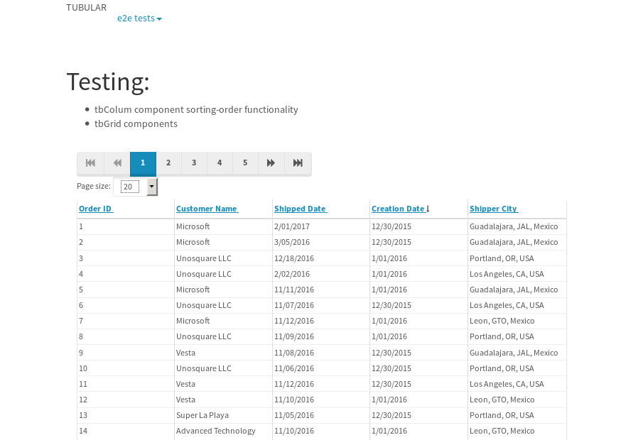
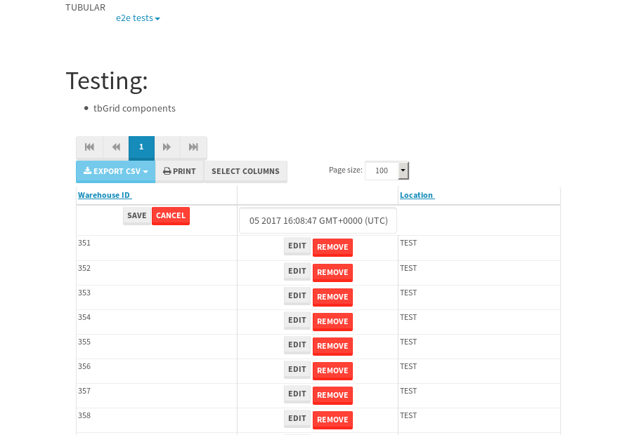
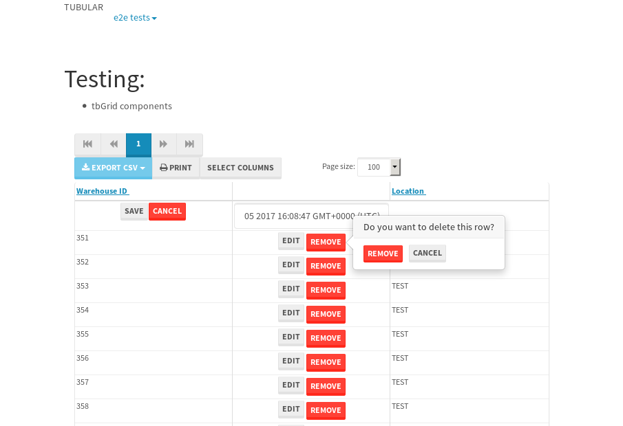

tbColumn.Grid Sorting - 184.267sTests: 5Skipped: 0Failures: 3 should sort data in ascending order then on descending order when sorting by Order Id column - 45.552sExpected '1' to be '500'.✗Expected '20' to be '481'.✗Tests passed: 50.00%should order data in ascending order when click-sorting an unsorted text column - 24.763sTests passed: 100.00%should order data in descending order when click-sorting an ascending-sorted text column - 44.534sExpected 'Advanced Technology Systems' to be 'Vesta'.✗Tests passed: 0.00%should order data in ascending order when click-sorting an unsorted date column - 24.635sTests passed: 100.00%should order data in descending order when click-sorting twice an unsorted date column - 44.776sExpected '12/30/2015' to match /1\/01\/2016/.✗Tests passed: 0.00%
tbEmptyForm - 3.838sTests: 3Skipped: 0Failures: 0 should have an empty required field - 0.37sTests passed: 100.00%should not be able to click on save - 0.043sTests passed: 100.00%should load default value for numeric field - 0.041sTests passed: 100.00%
Tubular Filters.tbColumnFilter - 95.602sTests: 12Skipped: 0Failures: 0 should cancel filtering when clicking outside filter-popover - 7.298sTests passed: 100.00%should disable Value text-input for "None" filter - 5.703sTests passed: 100.00%should disable apply button for "None" filter - 5.84sTests passed: 100.00%should decorate popover button when showing data is being filtered for its column - 11.261sTests passed: 100.00%should correctly filter data for the "Equals" filtering option - 7.329sTests passed: 100.00%should correctly filter data for the "Not Equals" filtering option - 7.238sTests passed: 100.00%should correctly filter data for the "Contains" filtering option - 7.32sTests passed: 100.00%should correctly filter data for the "Not Contains" filtering option - 7.297sTests passed: 100.00%should correctly filter data for the "Starts With" filtering option - 6.226sTests passed: 100.00%should correctly filter data for the "Not Starts With" filtering option - 6.214sTests passed: 100.00%should correctly filter data for the "Ends With" filtering option - 6.269sTests passed: 100.00%should correctly filter data for the "Not Ends With" filtering option - 6.287sTests passed: 100.00%
Tubular Filters.tbColumnDateTimeFilter - 122.991sTests: 12Skipped: 0Failures: 0 should cancel filtering when clicking outside filter-popover - 6.103sTests passed: 100.00%should disable Value text-input for "None" filter - 5.541sTests passed: 100.00%should disable apply button for "None" filter - 5.681sTests passed: 100.00%should clear filtering when clicking on Clean button - 16.407sTests passed: 100.00%should decorate popover button when showing data is being filtered for its column - 10.922sTests passed: 100.00%should correctly filter data for the "Equals" filtering option - 6.063sTests passed: 100.00%should correctly filter data for the "Not Equals" filtering option - 6.326sTests passed: 100.00%should correctly filter data for the "Between" filtering option - 10.993sTests passed: 100.00%should correctly filter data for the "Greater-or-equal" filtering option - 11.216sTests passed: 100.00%should correctly filter data for the "Greater" filtering option - 10.917sTests passed: 100.00%should correctly filter data for the "Less-or-equal" filtering option - 10.827sTests passed: 100.00%should correctly filter data for the "Less" filtering option - 10.851sTests passed: 100.00%
Tubular Filters.tbColumnOptionsFilter - 77.977sTests: 3Skipped: 0Failures: 0 should cancel filtering when clicking outside filter-popover - 7.216sTests passed: 100.00%should decorate popover button when showing data is being filtered for its column - 10.796sTests passed: 100.00%should filter column-elements in accordance to the selected filter when selecting a single option - 48.453sTests passed: 100.00%
Tubular Filters.tbTextSearch - 43.753sTests: 5Skipped: 0Failures: 0 min-chars is not set - 0.066sTests passed: 100.00%should filter data in searchable-column customer name to matching inputted text, starting from 3 characters - 5.853sTests passed: 100.00%should filter data in searchable-column shipper city to matching inputted text, starting from 3 characters - 10.989sTests passed: 100.00%should show clear button when there is inputted text only - 5.683sTests passed: 100.00%should clear filtering when clicking clear button - 15.51sTests passed: 100.00%
tbForm related components.tbCheckboxField - 20.824sTests: 2Skipped: 0Failures: 1 should save changes on "SAVE" - 18.3sExpected 51 to be -1.✗Tests passed: 50.00%should discard changes on "CANCEL" - 1.008sTests passed: 100.00%
tbForm related components.tbDropDownEditor - 22.038sTests: 5Skipped: 0Failures: 0 should set initial input value to the value of "value" attribute when defined - 0.841sTests passed: 100.00%should show the component name value in a label field when "showLabel" attribute is true - 0.771sTests passed: 100.00%should show a help field equal to this attribute, is present - 0.785sTests passed: 100.00%should submit modifications to item/server when clicking form "Save" - 17.935sTests passed: 100.00%should NOT submit modifications to item/server when clicking form "Cancel" - 1.052sTests passed: 100.00%
tbForm related components.tbTextArea - 23.794sTests: 7Skipped: 0Failures: 0 should set initial input value to the value of "value" attribute when defined - 0.728sTests passed: 100.00%should be invalidated when the number of chars is not in the range of "min" and "max" attributes - 1.25sTests passed: 100.00%should show the component name value in a label field when "showLabel" attribute is true - 0.691sTests passed: 100.00%should show a help field equal to this attribute, is present - 0.699sTests passed: 100.00%should require the field when the attribute "required" is true - 0.879sTests passed: 100.00%should submit modifications to item/server when clicking form "Save" - 17.832sTests passed: 100.00%should NOT submit modifications to item/server when clicking form "Cancel" - 1.092sTests passed: 100.00%
tbForm related components.tbDateEditor - 23.303sTests: 6Skipped: 0Failures: 0 should set initial date value to the value of "value" attribute when defined - 0.73sTests passed: 100.00%should be invalidated when the date is not in the range of "min" and "max" attributes - 1.398sTests passed: 100.00%should show the component name value in a label field when "showLabel" attribute is true - 0.776sTests passed: 100.00%should show a help field equal to this attribute, is present - 0.636sTests passed: 100.00%should submit modifications to item/server when clicking form "Save" - 17.886sTests passed: 100.00%should NOT submit modifications to item/server when clicking form "Cancel" - 1.163sTests passed: 100.00%
tbForm related components.tbTypeaheadEditor - 144.159sTests: 7Skipped: 0Failures: 6 should show an options list when there is an API-info/component entered-data - 17.912sFailed: Element must be user-editable in order to clear it.✗Tests passed: 0.00%should select the option clicked - 18.05sFailed: Element must be user-editable in order to clear it.✗Tests passed: 0.00%should show a "delete" button when an option/match is selected, and delete the option if button is clicked - 18.184sFailed: Element must be user-editable in order to clear it.✗Tests passed: 0.00%should show a label value equal to the component name when "showLabel" attribute is true - 17.889sTests passed: 100.00%should require a value when "require" attribute is true - 17.976sFailed: Element must be user-editable in order to clear it.✗Tests passed: 0.00%should submit modifications to item/server when clicking form "Save" - 18.037sFailed: Element must be user-editable in order to clear it.✗Tests passed: 0.00%should NOT submit modifications to item/server when clicking form "Cancel" - 18.237sFailed: Element must be user-editable in order to clear it.✗Tests passed: 0.00%
tbForm related components.tbSimpleEditor - 24.748sTests: 9Skipped: 0Failures: 0 should set initial input value to the value of "value" attribute when defined - 0.61sTests passed: 100.00%should be invalidated when the number of chars is not in the range of "min" and "max" attributes - 1.125sTests passed: 100.00%should show the component name value in a label field when "showLabel" attribute is true - 0.597sTests passed: 100.00%should set input placeholder to the value of "placeholder" attribute - 0.85sTests passed: 100.00%should validate the control using the "regex" attribute, if present - 0.759sTests passed: 100.00%should show a help field equal to this attribute, is present - 0.71sTests passed: 100.00%should require the field when the attribute "required" is true - 0.774sTests passed: 100.00%should submit modifications to item/server when clicking form "Save" - 17.792sTests passed: 100.00%should NOT submit modifications to item/server when clicking form "Cancel" - 0.808sTests passed: 100.00%
tbForm related components.tbNumericEditor - 23.572sTests: 7Skipped: 0Failures: 0 should set initial component value to the value of "value" attribute when defined - 0.567sTests passed: 100.00%should be invalidated when the entered number is not in the range of "min" and "max" attributes - 1.424sTests passed: 100.00%should show the component name value in a label field when "showLabel" attribute is true - 0.69sTests passed: 100.00%should show a help field equal to this attribute, is present - 0.59sTests passed: 100.00%should require the field when the attribute "required" is true - 0.779sTests passed: 100.00%should submit modifications to item/server when clicking form "Save" - 18.025sTests passed: 100.00%should NOT submit modifications to item/server when clicking form "Cancel" - 1.018sTests passed: 100.00%
tbForm Connection Error NoModelKey - 3.997sTests: 1Skipped: 0Failures: 0 tbForm connection error functionality - 0.003sTests passed: 100.00%
tbForm Connection Error NoServerUrl - 3.589sTests: 1Skipped: 0Failures: 0 tbForm connection error functionality - 0.003sTests passed: 100.00%
tbGridComponents - 9.287sTests: 6Skipped: 0Failures: 5 should add item with newRow method - 3.198sExpected '396 EDIT REMOVE TEST' not to be '396 EDIT REMOVE TEST'.✗Tests passed: 50.00%should add item with newRow method and cancel action - 0.264sFailed: ElementNotVisibleError✗Tests passed: 0.00%should update item with tbSaveButton - 0.781sExpected '' to be 'TEST'.✗Tests passed: 0.00%should NOT update item on cancel Update action - 0.396sFailed: ElementNotVisibleError✗Tests passed: 0.00%should remove item with tbRemoveButton - 0.748sExpected 46 not to be 46, 'should remove the row from the table'.✗Tests passed: 50.00%should NOT remove item on cancel Remove action - 0.75sTests passed: 100.00%
tbGridPager.navigation buttons - 2.772sTests: 1Skipped: 0Failures: 0 should perform no action when clicking on the numbered navigation button corresponding to the current-showing results page - 0.667sTests passed: 100.00%
tbGridPager.navigation buttons.first/non-last results page related functionality - 0.771sTests: 2Skipped: 0Failures: 0 should disable "first" and "previous" navigation buttons when in first results page - 0.111sTests passed: 100.00%should enable "last" and "next" navigation buttons when in a results page other than last - 0.66sTests passed: 100.00%
tbGridPager.navigation buttons.last/non-first results page related functionality - 1.334sTests: 2Skipped: 0Failures: 0 should disable "last" and "next" navigation buttons when in last results page - 0.658sTests passed: 100.00%should enable "first" and "previous" navigation buttons when in a results page other than first - 0.675sTests passed: 100.00%
tbGridPager.page navigation - 6.076sTests: 5Skipped: 0Failures: 0 should go to next results page when clicking on next navigation button - 1.207sTests passed: 100.00%should go to previous results page when clicking on previous navigation button - 1.316sTests passed: 100.00%should go to last results page when clicking on last navigation button - 0.711sTests passed: 100.00%should go to first results page when clicking on first navigation button - 1.619sTests passed: 100.00%should go to corresponding results page when clicking on a numbered navigation button - 1.221sTests passed: 100.00%
tbGridPagerInfo - 6.362sTests: 2Skipped: 0Failures: 0 should show text in accordance to numbered of filter rows and current results-page - 2.162sTests passed: 100.00%should show count in footer - 0.033sTests passed: 100.00%
tbPageSizeSelctor - 16.44sTests: 4Skipped: 0Failures: 0 should filter up to 10 data rows per page when selecting a page size of "10" - 2.82sTests passed: 100.00%should filter up to 20 data rows per page when selecting a page size of "20" - 3.789sTests passed: 100.00%should filter up to 50 data rows per page when selecting a page size of "50" - 3.324sTests passed: 100.00%should filter up to 100 data rows per page when selecting a page size of "100" - 3.151sTests passed: 100.00%
tbSingleForm - 27.289sTests: 8Skipped: 1Failures: 1 should load correct info - 0s***Skipped***Tests passed: 0%should change customer name - 3.683sTests passed: 100.00%should save it - 3.939sExpected '' to be 'Saved'.✗Expected '' to be 'Saved'.✗Tests passed: 0.00%should clear the inputs - 3.647sTests passed: 100.00%should update - 3.827sTests passed: 100.00%should reset editor - 3.414sTests passed: 100.00%should not save if not Changes - 3.471sTests passed: 100.00%should not be able to click on save - 5.307sTests passed: 100.00%


{kind=link}
{kind=link}
{kind=link}
{kind=link}